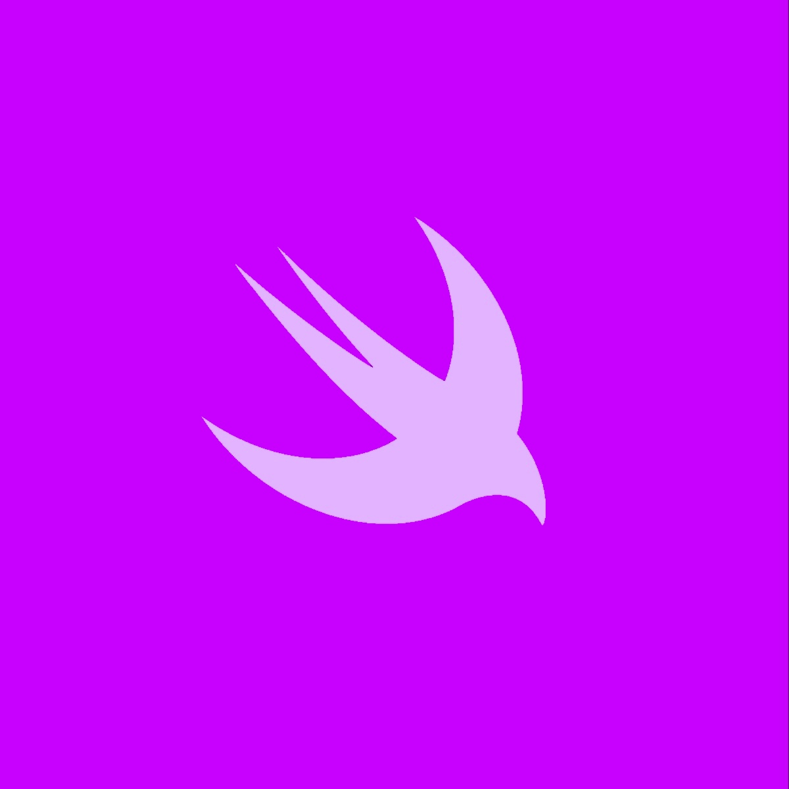

30, Mar 2024
Swift: Nil-Coalescing Operator
Optionals are a powerful concept for representing values that might or might not be present. It's the definite roads towards dramatically reducing nil-related runtime errors. When working with optionals, it's crucial to handle potential `nil` values gracefully to avoid runtime errors. One of the most useful tools in Swift for dealing with optionals is the
nil-coalescing operator (??). So let's tap into what the nil-coalescing operator does, how to use it effectively, and when to consider alternative approaches.

Understanding OptionalsFirst, let's recap what optionals are in Swift. An optional is a type that can hold either a value of the specified type or `nil`. This is particularly useful when dealing with values that might not always be available, such as data from a network request or user input.
var name: String? = "John"
var age: Int? = nil
Introducing the Nil-Coalescing OperatorThe nil-coalescing operator (??) provides a concise and efficient way to provide a default value for an optional if it's `nil`. It takes two operands: an optional value and a default value. If the optional value is not `nil`, the operator returns the unwrapped value. Otherwise, it returns the default value.
let person: Person? = Person(name: "Alice")
let city = person?.address?.city ?? "Unknown"
In the above example, if `person`, `address`, or `city` is `nil` (optional chaining), the `??` operator will return the default value "Unknown". Notice that in this case, the compiler will infer the type of `city` to be `String` rather than `String?`
Common Use CasesThe nil-coalescing operator is a versatile tool with many practical applications:
Providing Default Values
•
User Interface: Set default values for UI elements based on user preferences or system settings.
•
Data Validation: Provide default values for missing data in forms or user input.
•
Configuration Files: Set default values for configuration options.
let username = userPreferences["username"] ?? "Guest"
let defaultLanguage = languageSetting ?? "English"
Chaining Optionals
•
Accessing Nested Properties: Safely access nested properties of optional values.
•
Handling Optional Collections: Provide default values for empty collections or missing elements.
let firstPerson = people.first?.name ?? "No person found"
let defaultColor = colorPreferences["accentColor"] ?? .systemBlue
Simplifying Conditional Logic
*Avoid Nested `if-else` Statements:*• Reduce code complexity by using the nil-coalescing operator instead of multiple conditional checks.
let isLoggedIn = userSession?.isLoggedIn ?? false
if isLoggedIn {
// User is logged in
} else {
// User is not logged in
}
The nil-coalescing operator is a powerful tool in Swift that simplifies the handling of optionals. By understanding its syntax and use cases, you can write more concise and readable code. Remember to use it judiciously and consider alternative approaches when necessary.